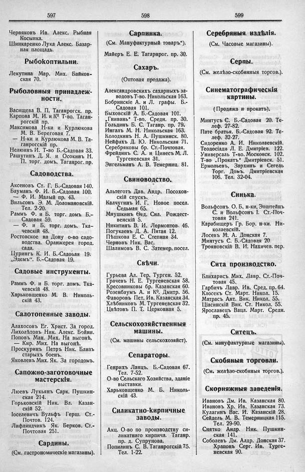

Лист источника 333
Скан

Распознанный текст
597
Червяковъ Ив. Алекс. Рыбная
Косынка.
Шинкаренко Лука Алекс. Базар-
ная площадь.
Рыбокоптильни.
Лекутина Мар. Мих. Байков-
ская 70.
Рыболовныя принадлеж-
ности.
Васищева В. П. Таганрогск. пр.
Карпова М. И. и К[underline:0]о Т-во. Таган-
рогскій пр.
Максимова Н-ки и Курлюкова
М. В. Береговая 7.
— Н-ки и Курлюкова М. В. Та-
ганрогскій пр.
Нелюинъ И. Т-во Б.-Садовая 33.
Рашутинъ Д. Я. и Осокинъ Н.
П. торг. домъ. Таганрог. пр.
Садоводства.
Аксеновъ Ст. Г. Б.-Садовая 140.
Бауманъ Ф. И. Б.-Садовая 100.
— Ф. И. Малый пр. 43.
Вильсонъ Э. М. Доломановскій.
Тел. 2-20.
Раммъ Ф. и Б. торг. домъ Б.-
Садовая 59.
— Ф. и Б. торг. домъ. Тка-
чевскій 48.
Ростовское на Дону о-во садо-
водства. Оранжерея город.
сада.
Цурингъ К. И. Б.-Садовая 19.
„Эдемъ“. Б.-Садовая 19.
Садовые инструменты.
Раммъ Ф. и Б. торг. домъ. Тка-
чевскій 48.
Харьковщенко М. В. Николь-
скій 43.
Салотопенные заводы.
Алахосовъ Ег. Христ. За город.
Лихолѣтовъ Ник. Алекс. Бойни.
Поповъ Ман. Мих. На выгонѣ.
— Кир. Мих. На выгонѣ.
Проскуринъ Петръ Ник. Близъ
старыхъ боенъ.
Яковлевъ Мих. Як. За городомъ.
Сапожно-заготовочные
мастерскія.
Люевъ Лукьянъ Сарк. Пушкин-
ская 214.
Горьковскій Ник. Вл. Казан-
скій 52.
Іоселевичъ Вульфъ Герш. Ст.-
Почтов. 124.
Лифляндчикъ Як. Берков. Ст.-
Почтовая 251.
Сардины.
(См. гастрономическіе магазины).
598
Сарпинка.
(См. Мануфактурный товаръ“).
Майеръ Е. Е. Таганрог. пр. 30.
Сахаръ.
(Оптовая продажа).
Александровскихъ сахарныхъ за-
водовъ Т-во. Никольская 163.
Бобринскіе А. и Л. графы. Б.-
Садовая 101.
Быховскій А. Б.-Садовая 101.
„Гнивань“ Т-во. Средн. пр. 30.
Гольдинъ Б. С. Таганр. пр. 79.
Ингалъ М. Н. Никольская 163.
Колодкинъ Н. А. Пушкинск. 80.
Нейфахъ Д. Ю. Никольская 71.
Серебряковы бр. Ст.-Почтовая.
Фрейдинъ С. А. и Цинесъ М. Л.
Тургеневская 31.
Энгельманъ А. В. Темерниц. 81.
Свиноводство.
Альтеготъ Дав. Андр. Посохов-
скій спускъ.
Калчугинъ И. Г. Новое посел.
Седьмая 65.
Мнушкинъ Ѳед. Сил. Рождест-
венскій 5.
Никитинъ В. И. Лермонтов. 46.
Погукаевъ Д. А. Пятая 12.
Пѣшкова Е. С. Степная 34.
Черновъ Ник. Вас.
Шалимовъ В. С. Затемер. посел.
Свѣчи.
Гурьева Ал. Тер. Турген. 52.
Грачевъ Н. Е. Тургеневская 58.
Кресовниковы бр. Казанская 60.
Розенбаумъ А. и К[underline:0]. Дмитр. 56.
Фаворовъ Пет. Ив. Казанская 34.
Хлѣбниковъ М. Тургеневская 32.
Цвѣтовъ П. Т. Церковная 5.
Сельскохозяйственныя
машины.
(См. машины сельскохозяйст).
Сепараторы.
Генрихъ Ланцъ. Б.-Садовая 67.
Тел. 7-52.
О-во Сельскаго Хозяйства, зданіе
выставки.
Харьковщенко М. Б. Николь-
скій 43.
Силикатно-кирпичные
заводы.
Акц. О-во по производству си-
ликатнаго кирпича. Таганр.
пр. д. Супрунова.
Попилинъ С. В. Таганрогскій 75.
Тел. 1-22.
599
Серебряныя издѣлія.
(См. Часовые магазины).
Серпы.
(См. желѣзо-скобянныя торгов.).
Синематографическія
картины.
(Продажа и прокатъ).
Минтусъ С. Б.-Садовая 20. Те-
леф. 27-82.
Пате братья. Б.-Садовая 92. Те-
леф. 32-27.
Сидоренко А. И. Николаевскій.
Теодосіади Л. Е. Дмитріев. 122.
Универсалъ Т-во. Московск. 102.
Т-во „Прокатъ“ Дмитріевск. 51.
Ермольевъ, Зархинъ и Сегель
Торг. Домъ. Дмитріевская
106. Тел. 32-04.
Синька.
Вольфсонъ О. Б. н-ки, Эпштейнъ
С. и Вольфсонъ І. Ст.-Поч-
товая 241.
Карабищеръ Гр. Бор. н-ки. Ни-
колаевскій.
Лосевъ М. А. Донская 7.
Минтусъ С. Б.-Садовая 20.
Трояновскій В. И. Нахичев. пер.
Сита производство.
Блихарисъ Мих. Лавр. Ст.-Поч-
товая 45.
Гарбичъ Лавр. Ив. Сред. пр. 64.
Клосекъ Ст. Март. Никол. 15.
Матрасъ Ант. Вик. Никол. 55.
Ціасинскій Вик. Ст. Никол. 55.
Ярославецъ Вацл. Март. Средн.
пр. 45.
Ситецъ.
(См. мануфактурные магазины).
Скобяныя торговли.
(См. желѣзо-скобяныя торгов.).
Скорняжныя заведенія.
Ивановъ Дм. Ив. Казанская 80.
Ивановъ Хр. Ив. Казанская 73.
Кулагинъ Вас. И. Казанскій 28.
Сейдель М. В. Темерницкая 115.
Тел. 29-90.
Снятко Андр. Ник. Пушкин-
ская 141.
Соболевъ Дм. Алдр. Донская 37.
Храповъ Серг. Ив. Турге-
невская 90.